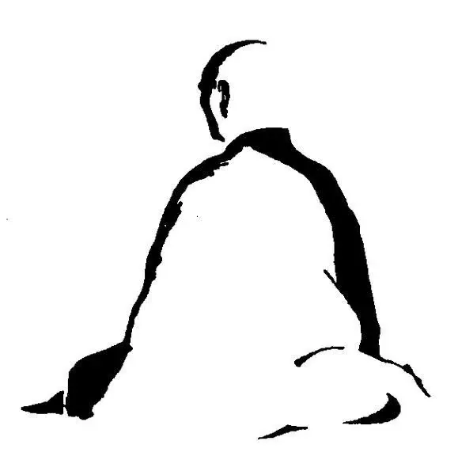

The Reality of Coping with Stress
Have you ever had one of those days? You’re running late to work and forcing yourself into an overcrowded train while coping with stress. You try to keep what little sanity you have left as you sip your third cup of coffee. That’s what stress looks like. Stress manifests in various forms, such as insomnia, headaches, and losing your temper quickly.
The Need for Coping Strategies
While stress management is widely discussed, karate can be a valuable tool for coping with stress. A study by UK Youth, a national charity, found that many young adults face significant stress while coping with stress. In their survey of 1,000 people aged 18-25, participants reported feeling stressed and anxious for around six hours a day. With mental health issues at an all-time high, we urgently need effective coping strategies.
My Journey in Martial Arts
My martial arts journey began at the age of ten. What started as a casual hobby has now become an integral part of my life, spanning over twelve years. I joined the instructing program early on, which provided me with valuable insight into karate on a deeper level of coping with stress. This experience required me to explain and demonstrate techniques to students while also addressing challenging questions about the practice. Engaging with students in this way has enriched my understanding of karate and its principles related to coping with stress.
Currently, I create intervention plans and provide therapy for clients dealing with mental health issues. This role allows me to apply the insights gained from my karate practice to support others. This work has shown me the stress people face daily. My karate training has positively influenced my therapeutic work. I draw many transferable lessons from karate that apply to all aspects of life, especially in coping with stress.
The Three Ks: Kihon, Kata, and Kumite
The basic foundation of karate training lies with the three Ks: Kihon, Kata, and Kumite. Let us first consider kumite, or sparring. Training against an opponent helps develop skills such as timing and accuracy of movement. More importantly, it harnesses the ability to control our fight or flight response while coping with stress.
Imagine a scenario: as you’re reading this, you look up and see a person standing there wielding a knife. What do you do? Do you run? Do you stay still and wait for their next move? Your heart is likely racing while your brain tries to make a quick decision. The term fight or flight represents this choice our brain is making. In stressful situations and while coping with stress, this physiological response system is our body’s way of handling stress.
Practicing kumite weekly helps me control my response system, preparing me for real-life situations. It requires us to develop skills such as concentration, strategy, and accuracy. This routine makes students accustomed to feeling stressed.
The adrenaline and the need to make on-the-spot decisions contribute to this experience, normalizing the fight or flight response and reducing the shock to the system. Sparring develops our instinct and calmness. A study found that karate students felt significantly less stress when facing challenges than those who had not trained in martial arts, which is a critical component of coping with stress.
The Role of Senses and Kata
Our senses significantly influence our perception of stress. Research shows that participants who inhaled calming aromas experienced improved moods and slower heart rates compared to their baseline. Why is this relevant? As mentioned previously, one of the three fundamentals of karate is kata. Kata serves as a structured set of movements that require focus and concentration, making it beneficial for coping with stress. Once a kata is announced, the practitioner fully focuses on executing the movements to the best of their ability. Additionally, kata teaches practitioners how to breathe, with certain movements requiring more forceful exhalation while others are slow and deliberate. These factors make kata a form of moving meditation, essential for lowering stress levels.
A study investigating the effect of kata on cognitive performance found that individuals experienced reduced anxiety after practicing kata for several weeks. I remember when I first memorized a kata and felt satisfied with my performance. My Sensei looked at me and said, “Okay, now do it ten more times!” As a young student, I found this quite frustrating. However, looking back, I recognize the value of the rigor involved in practicing kata as a method for coping with stress.
Finding Focus Through Repetition
We practice the same forms repeatedly. This repetition fosters a unique level of concentration and determination in kata. In the hustle and bustle of daily life, our senses are always in overdrive. We may have one eye on the TV, listen to someone on the phone, and plan tomorrow’s events all at once. Kata helps us focus by allowing us to concentrate on the same set of movements repeatedly, giving our minds a much-needed rest while coping with stress.
The Importance of Balance
Since graduating from university last year, I have found it difficult to balance various areas of my life. This struggle has led me to cut back on sleep and meals. As one can imagine, environmental habits are imperative in maintaining a healthy mind. A recent U.S. study concluded that physical activity and a healthy diet significantly contribute to higher well-being among older adults.
Last year, I had the opportunity to discuss this with a Master shiatsu practitioner. He spoke about forming small habits that separated my work from home life, such as changing my clothes and unwinding. This idea of a set ritual helps focus the mind and serves as a focal point for transitioning to a different activity, preventing us from being mentally scattered across multiple tasks, which is essential for coping with stress.
Real-Life Applications of Karate Principles
A few months ago, I had a client who suffered from severe anxiety and panic attacks. He was desperate for help, stating that he had “tried everything,” from anxiety medication to private therapy and even hypnosis, while coping with stress. My experience as a karate practitioner has taught me that there is nothing more powerful than meditation.
Every week during training, we complete certain practices before starting the lesson. We light incense, ring a bell, and meditate. As I mentioned regarding kata, the sounds and smells help us focus and concentrate, allowing our hectic minds to slow down and process everything for a moment, which is a great aid in coping with stress.
Stress Management Instructions
For this reason, I included a set of instructions in his intervention plan that can serve as a useful aid for coping with stress:
- Space – Find a quiet and comfortable place with minimal sensory interference. Look for a room that is at a comfortable temperature, free from interruptions, and not too dark or bright.
- Posture – Sit in a comfortable position, close your eyes, relax your shoulders, and keep your back straight.
- Breathing – Breathe deeply in through your nose and exhale out through your mouth slowly, continually repeating this.
- Focus – Concentrate only on your breathing. It’s normal for your mind to suddenly focus on distractions, like an itching leg or what to have for dinner. When this happens, simply bring your attention back to the present and concentrate on your inhale and exhale. It may be helpful to have a calming smell by using incense or perfume.
- Feeling – As you practice this exercise, your mind and body will signal when your stress levels have decreased. You may notice muscle relaxation and an increased ability to think clearly.
The Practice of Mokuso
We call this technique “Mokuso,” the Japanese term for meditation. We practice it at the beginning of each training session to help focus our minds. While this may seem like an obvious and easy task to accomplish, ask yourself this: When did you last sit quietly and think of nothing? I’m sure that is a difficult question to answer, which highlights the importance of having the opportunity to focus ourselves while coping with stress.
The founder of karate, Gichin Funakoshi, once said, “When you look at life, think in terms of karate.” Remember that karate is not just about martial arts—it embodies life. We can apply karate principles to all areas of life, using them as a coping mechanism.
Cultivating Calmness Through Experience
A few months ago, I participated in a counseling course where we practiced being both therapist and client. When my partner began crying while sharing her story, my tutor noted how calm I appeared in that situation. That sense of calm didn’t come from nowhere; it was cultivated through years of kata practice, learning to manage unexpected scenarios in kumite, and developing focus through meditation as part of my journey in coping with stress.
A Challenge for Today
Sitting quietly and thinking of nothing can be challenging. However, I encourage you to take five minutes today to practice the exercise above and relieve any stress you may be holding. Furthermore, consider pursuing a dojo that promotes this type of traditional training and see where the journey takes you in your coping with stress journey.